측량및지형공간정보기사 (2006-03-05 기출문제)
1과목: 측지학 및 위성측위시스템
1. GPS를 이용한 기준점측량의 계획을 수립하려고 한다. 이 때 위성의 이용가능 시간대와 배치 상황도를 참고하여 관측계획 시 고려하지 않아도 되는 것은?
- 상공 시계 확보를 위한 성정 위치의 지상 장애물 분포상황
- 임계 고도각 이상에 존재하는 사용위성의 개수
- 수신에 사용할 각 위성의 번호 파악
- 관측 예정 시간대의 DOP 수치 파악
(정답률: 80%)

2. 그림과 같이 이동국을 중심으로 반경 60km 위치에 3곳의 GPS 상시관측소가 설치되어 있는 경우, 이동국에서 가장 높은 정확도를 기대할 수 있는 GPS 측량방법은? (단, 관측조건은 동일하다.)
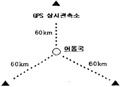
- 임의 GPS 상시관측소를 고정국으로하여 L1 반송파를 이용한 상대측위를 실시한다.
- 임의 GPS 상시관측소를 고정국으로하여 GPS 측위를 실시한다.
- 임의 GPS 상시관측소를 고정국으로하여 실시간동적측위(ATK:Real Time Kinematic)를 실시한다.
- 가상기준점 측위시스템(VRS:Virtual Regference System)을 활용한다.
(정답률: 93%)
3. 다음 중 물리학적 측지학에 해당되지 않는 것은?
- 중력 측정
- 천체의 고도 측정
- 지자기 측정
- 조석 측정
(정답률: 65%)
4. 우리나라에 설치된 수준점의 표고에 대한 설명으로 옳은 것은?
- 평균 해수면으로부터의 높이를 나타낸다.
- 도로의 시점을 기준으로 나타낸다.
- 만조면으로부터의 높이를 나타낸다.
- 삼각점으로부터의 높이를 나타낸다.
(정답률: 38%)
5. 다음 설명 중 틀린 것은?
- 지자기 측량은 지하 물질의 자성의 차이를 이용한다.
- 지자기 이상이란 지구의 자장과 거의 일치하는 쌍극자를 지구 중심에 놓은 상태와 실측과의 차이를 말한다.
- 복각이란 전자장과 수평분력 사이의 각이다.
- 편각이란 수평분력과 자북이 이루는 각이다.
(정답률: 79%)
6. 인공위성과 관측점간의 거리를 결정하는데 사용되는 주요원리는?
- 다각법
- 세차운동의 원리
- 음향관측법
- 도플러 효과
(정답률: 95%)
7. 다음 중 실측된 중력값을 기준면의 값으로 보정하는 중력보정에 해당되지 않는 사항은?
- 지형보정
- 이상보정
- 고도보정
- 아이소스타시보정
(정답률: 79%)
8. 측지학에 대한 다음 설명 중 틀린 것은?
- 해양측량은 해양의 위치 및 수심결정, 해저 지질조사 등을 목적으로 한다.
- 표고는 평균 해수면을 기준으로 직접 또는 간접 수준측량에 의해 결정한다.
- 지구면상의 임의의 점에 대한 위치를 지구면상의 다른점과 관계없이 천체(별)를 관측하므로써 직접 구라는 방법을 천문측량이라 한다.
- 지상으로부터 발사 또는 방사된 전자파를 인공위성으로 흡수하여 해석하므로써 자구자원 및 환경문제를 해결할 수 있는 것을 삼차원 측량이라 한다.
(정답률: 42%)
9. GPS 위성측량에 관한 다음의 설명 중 잘못된 것은?
- SA방법의 해제로 절대측위의 정확도가 향상되었다.
- 위성시계의 오차가 없다면 3대의 위성신호를 사용하여도 위치결정이 가능하다.
- GPS 위성은 위성마다 각각 자기의 코드 신호를 전송한다.
- 위성과 수신기 간의 거리측정의 정확도는 C/A코드를 사용하거나 L1반송파를 사용하거나 차이가 없다.
(정답률: 82%)
10. 다음 중 타원체의 설명 중 옳지 않은 것은?
- 회전타원체는 한 타원체의 자축을 중심으로 회전하여 생긴 입체 타원체이다.
- 지구타원체는 지오이드를 회전시켜 지구의 형으로 규정한 타원체이다.
- 준거타원체는 어느 지역의 대지측량계의 기준이 되는 타원체이다.
- 국제타원체는 전 세계적으로 대지측량계를 동일하기 위한 지구타원체이다.
(정답률: 71%)
11. 지구상의 어느 한 점에서 타원체의 법선과 지오이드와 법선은 일치하지 않게되는데 이 두 법선의 차이를 무엇이라 하는가?
- 중력편차
- 지오이드 편차
- 중력 이상
- 연직선 편차
(정답률: 58%)
12. 평탄한 표고 700.0m인 지역에 설치한 기선의 측정치가 800.0m이었다. 이 기선의 평균해면상 거리는? (단, 지구의 반지름은 6370.0km로 가정)
- 795.7m
- 799.9m
- 803.3m
- 8⑤.1m
(정답률: 82%)
13. 다음 그림에서와 같이 지구상의 두 점 A, B점에서 측량을 실시하여 AB의 지표면 거리 920km, ∠ACD=7°의 결과를 얻었을 때 지구의 원둘레는? (단, 지구는 구로 생각한다.)
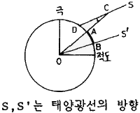
- 약 36.783km
- 약 47.314km
- 약 58.432km
- 약 67.513km
(정답률: 77%)
14. 다음 중 지자기측량에서 필요한 보정이 아닌 것은?
- 일변화 및 기계오차에 의한 시간적 변화 보정
- 기준점 보정
- 온도 보정
- 태양 고도각 보정
(정답률: 85%)
15. 하나의 등포텐셜면 상의 여러 점들에는 같은 값을 주는 것이 좋으며, 이를 위해 어떤 기준을 중심으로 높이에 해당하는 값을 고려해야 하는데 이러한 개념으로 고려된 표고를 무엇이라 하는가?
- 역표고
- 지반고
- 중심표고
- 정표고
(정답률: 58%)
16. 구면삼각형 ABC의 세 내각이 다음과 같을 때 면적은? (단, 지구반경은 6370km임)
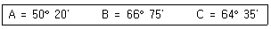
- 1,222,663 km2
- 1,362,788 km2
- 1,433,456 km2
- 1,534,433 km2
(정답률: 74%)
17. GPS의 활용분야와 가장 관계가 먼 것은?
- 측지 측량기준망의 설정
- 지각변동 관측
- 지형공간정보 획득 및 시설물 유지관리
- 실내 건축인테리어
(정답률: 95%)
18. 지구의 적도반경이 6377km, 극반경이 6356km일 때 타원체의 이심률은?
- 0.910
- 0.091
- 0.081
- 0.018
(정답률: 77%)
19. 다음 중 천체의 위치를 나타내는데 사용되는 것은?
- 경도, 위도
- 평면직각, 종횡선
- 적경, 적윌
- 구면직각, 종횡선
(정답률: 87%)
20. GPS 측량의 오차에 관한 설명 중 틀린 것은?
- 전리층 통과시 전파의 운반지연량은 기온, 기압, 습도 등의 기상 측정에 의해 보정될 수 있다.
- 기선해석에서 고정점의 좌표 정확도는 신점의 위치정확도에 영향을 미친다.
- 일중차의 해석 처리만으로는 GPS 위성과 GPS 수신기 모두의 시계오차가 소거되지 않는다.
- 동 기종의 GPS 안테나는 동일방향을 향하도록 설치함으로써 전파 입사각에 의한 위상의 엇갈림에 대한 영향을 줄일 수 있다.
(정답률: 93%)
2과목: 응용측량
21. 터널 갱ㄴ재의 두 측점 좌표가 A(150, 300), B(400, 500)이고 표고가 각각 A=10m, B=20m일 때, AB점을 잇는 갱도의 경사각은 얼마인가?
- 약 1° 47‘ 20“
- 약 2° 12‘ 13“
- 약 3° 27‘ 08“
- 약 4° 32‘ 10“
(정답률: 43%)
22. 단곡선을 설치하기 위하여 교각 I=80°, 외할 E=10m로 하려고 할 때 곡선길이(C.L )는?
- 22.89m
- 25.13m
- 45.71m
- 50.27m
(정답률: 37%)
23. 하구 심천측량에 관한 설명 중 잘못된 것은?
- 하구심천측량은 하구 부근 하저 및 해저의 지형을 조사한다.
- 하구의 항만시설, 해안보전 시설의 설계자료로 사용된다.
- 조위를 관측하고 실측한 수심을 기본수준면으로부터의 수심으로 보정하여 심천측량의 정확도를 높인다.
- 해안에서는 수심 100m 되는 앞바다까지를 측량구역으로 한다.
(정답률: 24%)
24. 다음 중 수애선의 측량에 관한 설명 중 틀린 것은?
- 수면과 하안과의 경계선으로 하천수위의 변화에 따라 다르며 평균고수위에 의하여 결정한다.
- 심천측량에 의하여 횡단면도를 만들고 그 도면에서 수위의 관계로부터 평수시의 수위를 구한다.
- 감조부의 하천에서는 하구의 기준면인 평균해수면을 사용할 경우도 있다.
- 같은 시각에 많은 횡단측량을 하여 횡단면도를 작성하고 수애의 위치를 구한다.
(정답률: 14%)
25. 완화곡선을 설치할 때 설계속도(V)가 350km/hr, 곡선반경(R)이 7,000m일 경우 캔트량은? (단, 레일 간격은 1.5m로 가정)
- 160.0mm
- 180.00mm
- 206.7mm
- 230.5mm
(정답률: 60%)
26. 그림과 같이 도로의 종단곡선을 2차 포물선으로 설치할 경우 교점 V의 표고가 125.30m라 할 때 종단곡선 시작점 A로부터 횡거(x)가 120m 되는 지점 C의 종단곡선상 계획고는 얼마인가? (단, 종단곡선의 길이(L)는 200m로 한다.)
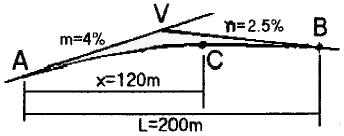
- 122.50m
- 123.76m
- 124.50m
- 124.76m
(정답률: 57%)
27. 시설물을 보는 각도에서 압박감을 느끼는 수평시각(θH)과 수직시각(θV)은?
- (θH)＞60°, (θV)＞15°
- (θH)＞60°, (θV)＞10°
- (θH)＞50°, (θV)＞15°
- (θH)＞50°, (θV)＞15°
(정답률: 58%)
28. 고속도로에 일반적으로 많이 쓰이는 완화곡선은?
- 3차 포물선
- 렘니스케이트 곡선
- 3차 나선
- 클로소이드 곡선
(정답률: 39%)
29. 다음 중 터널측량의 순서로서 가장 옳은 것은?
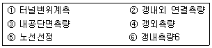
- ⑤-④-②-⑥-③-①
- ⑤-④-⑥-②-③-①
- ⑤-⑥-②-④-③-①
- ⑤-⑥-②-④-①-③
(정답률: 60%)
30. 완화곡선의 성질 중 잘못된 것은?
- 곡선반경은 완화곡선의 시점에서 무한대이다.
- 완화곡선의 접선은 시점에서 직선에 접한다.
- 완화곡선의 접선은 종점에서 원호에 접한다.
- 종점에 있는 캔트는 원곡선의 캔트와 역수이다.
(정답률: 67%)
31. 다음 중 원곡선의 종류에 속하지 않는 것은?
- 단곡선
- 렘니스케이트
- 머리핀곡선
- 반향곡선
(정답률: 67%)
32. 그림과 같이 간격을 d로 일정하게 나누어 그 면적을 구할 때 사다리꼴 공식을 이용하여 구한 면적(m2)은?
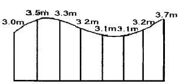
- 45.5m2
- 46.7m2
- 49.8m2
- 51.0m2
(정답률: 62%)
33. 터널측량을 크게 3부분으로 나눌 때 그 분류로 옳지 않은 것은?
- 지상측량(갱외측량)
- 지하측량(갱내측량)
- 지상ㆍ지하 연결측량
- 평면측량
(정답률: 59%)
34. 체적측량에 있어서 관측된 수평 및 수직거리 x, y, z의 거리오차를 dx, dy, dz라 하고 거리관측의 정도가 K로 동일하다고 할 때, 다음 중 체적관측의 정도는?
- 1/3K
- 1K
- 3K
- 9K
(정답률: 75%)
35. 노선측량의 용지측량에 관한 사항 중 틀린 것은?
- 축척 1/500 또는 1/600의 용지도를 작성한다.
- 용지도는 지적도와 관계가 있다.
- 용지폭 말뚝설치는 중심선에 직각이다.
- 종단면도를 이용하여 용지폭을 결정한다.
(정답률: 29%)
36. 단곡선을 설치할 때 곡선반경 R=200m, 교각 I=45° 이면 20m에 대한 편각은 얼마인가?
- 2° 51‘ 53“
- 3° 51‘ 53“
- 5° 43‘ 46“
- 6° 43‘ 46“
(정답률: 54%)
37. 하천측량에 관한 내용 중 틀린 것은?
- 평면측량의 범위는 제내지 300m 이내 또는 홍수가 영향을 미치는 영역보다 100m 정도 넓게 한다.
- 삼각측량의 구역이 광범위한 경우에는 국가삼각점을 이용하지만 소규모 지역에서는 삼각점과 연결하지 않아도 된다.
- 다각측량은 서로 다른 삼각점 간을 연결한 폐합다각망을 사용한다.
- 세부측량은 하천유역에 있는 모든 것을 대상으로 한다.
(정답률: 19%)
38. 다음 그림은 도로건설의 절취단면을 표시한 것이다. 단면적을 계산한 것으로 맞는 것은?
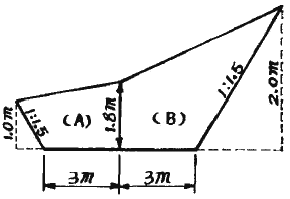
- 13.95m2
- 15.95m2
- 12.95m2
- 14.95m2
(정답률: 22%)
39. 하천의 어느 지점에서 유량측정을 위하여 직접적인 관측사항이 아닌 것은?
- 강우량 측정
- 유속 측정
- 심천측량
- 유수단면적 측정
(정답률: 58%)
40. 지하시설물에 대한 탐사 공정 순서로 옳은 것은?
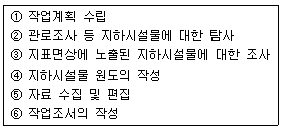
- ①→⑤→③→②→④→⑥
- ①→②→③→④→⑤→⑥
- ①→⑤→④→③→②→⑥
- ①→②→⑤→④→③→⑥
(정답률: 65%)
3과목: 사진측량 및 원격탐사
41. 다음 중 GIS 데이터베이스으 관리 및 구축시 적용하는 DBMS방식의 내용으로 옳지 않은 것은?
- 파일처리방식의 단점을 보완한 방식이다,
- DBMS프로그램은 독립적으로 운영될 수 있다.
- 데이터베이스와 사용자사간 모든 자료의 흐름을 조정하는 중앙제어역할이 가능하다.
- DBMS프로그램은 자료의 신뢰와 동시사용을 위하여 단일 프로그램으로 구성된다.
(정답률: 65%)
42. 다음 중 공간추정과 관련된 설명으로 옳지 않은 것은?
- 주위의 이미 알려진 지형의 표고값을 이용하여 미지의 특정 지점의 표고값을 추정하는 것을 포함한다.
- 주위의 알려진 패턴을 이용하여 향후 진행될 패턴을 예측하는 것을 포함한다.
- 특정 변이에 대한 공간상의 확산을 추정하는 것을 포함한다.
- 내삽은 속성값을 알고 있는 지역의 외부에 존재하는 지점에 대한 속성값을 추정하는 것이다.
(정답률: 53%)
43. 편위수정에 있어서 만족해야 할 3가지 조건을 기술한 내용 중 옳지 않은 것은?
- 기하학적 조건
- 광학적 조건
- 샤임프러그 조건
- 템프릿트 조건
(정답률: 77%)
44. 원격탐사의 특징에 대한 설명으로 잘못된 것은?
- 짧은 시간 내에 넓은 지역을 동시에 관측할 수 있으며 반복관측이 가능하다.
- 회전주기가 일정하므로 원하는 지점 및 시기에 관측하기 쉽다.
- 다중 파장대에 의한 지구표면의 정보획득이 용이하고 관측자료가 수치기록 되므로 판독이 자동적이고 정향화가 가능하다.
- 관측이 좁은 시야각으로 행하여지므로 얻은 영상은 정사투영상에 가깝다.
(정답률: 72%)
45. 어느 모델의 상호표정 직후 X-방향의 기선길이가 bx가 225.0mm였다. 이 때 지상거리 471.0m 간격의 지상기준점 A, B에 대한 모델상 거리가 398.9mm로 관측되었다. 1/1,200 축척으로 도화하려면 bx를 얼마로 수정하여야 하는가?
- 217.8mm
- 221.4mm
- 22.1mm
- 228.7mm
(정답률: 62%)
46. 절대표정에 필요한 최소의 기준점수는?
- 3점의 (x, y)좌표 및 2점의 z좌표
- 2점의 (x, y)좌표 및 2점의 z좌표
- 3점의 (x, y, z)좌표 및 2점의 z좌표
- 2점의 (x, y, z)좌표 및 1점의 z좌표
(정답률: 69%)
47. 항공삼각측량의 오차조정 방법으로 해석적 방법에 대한 설명으로 틀린 것은?
- 사진좌표를 기본단위로 조정하는 것을 광속법(bundleadjustment)이라 한다.
- 모델좌표를 기본단위로 조정하는 것을 독립모델법(independent model triangulation)이라 한다.
- 스트립 좌표를 기본단위로 조정하는 것을 다항식법(polynomial method)이라 한다.
- 독립모델법은 다른 방법에 비하여 변환 인자가 많고 정밀도는 떨어지는 단점이 있다.
(정답률: 63%)
48. 표정점 측량에서 선점 상에 특히 유의해야 할 사항으로 옳지 않은 것은?
- 사진상에 명확하게 볼 수 있는 점이라야 한다.
- 상공에서 잘 볼 수 있고 평탄한 곳의 점이 좋다.
- 상공에서 잘 볼수만 있다면 측선을 연장한 가상점(假想店)이 좋다.
- 수애선과 같이 시간적으로 변화하지 않는 점이어야 한다.
(정답률: 75%)
49. 공간데이터베이스 내에 저장되는 객체가 갖는 정보로서 객체 간, 공간상의 위치나 관계성을 좀 더 정량적으로 구현하기 위한 것은?
- 도형정보
- 속성정보
- 위치정보
- 위상정보
(정답률: 50%)
50. 다음 중 GIS의 응용기법 중 하나로서 공간상에 나타난 연속적인 기복의 변화를 수치적으로 표현하는 방법은?
- DXF
- FM
- DEM
- AM
(정답률: 69%)
51. 초점거리 15cm, 화면의 크기 23cm×23cm의 광각카메라를 사용하여 축척 1/20000, 촬영기준면(표고 0m)에 대하여 중복도가 60%이었다. 동일 조건으로 새로운 지역을 촬영하여 중복도가 55%이었다면 이 지역의 표고는?
- 233m
- 267m
- 333m
- 367m
(정답률: 54%)
52. 초점거리 15cm인 광각카메라로 촬영고도 6,000m에서 시속 180km의 운항속도로 항공사진을 촬영할 때 사진노출점 간의 최소 소요 시간은? (단, 사진 화면 크기 23cm×23cm, 종중복도 60%이다.)
- 53.6초
- 63.6초
- 73.6초
- 83.6초
(정답률: 54%)
53. 축척 1/10000로 촬영한 수직사진의 크기를 23cm×23cm, 종중복을 60%로 할 때 촬영기선 길이는?
- 920m
- 1020m
- 1120m
- 1220m
(정답률: 72%)
54. 데이터모델을 이용하여 필요한 자료를 추출하고 앞으로의 현상을 예측하거나 계획된 행위에 대한 결과를 예측하는 것을 무엇이라 하는가?
- 검색
- 변환
- 출력
- 모델링
(정답률: 74%)
55. 원격탐사의 정보처리흐름으로 옳은 것은?
- 자료수집-자료변환-방사보정-기하보정-자료압축-판독응용-자료보관
- 자료수집-방사보정-기하보정-자료변환-자료압축-판독응용-자료보관
- 자료수집-자료변환-기하보정-방사보정-자료압축-판독응용-자료보관
- 자료수집-방사보정-자료변환-기하보정-자료압축-판독응용-자료보관
(정답률: 45%)
56. 촬영고도 3,000m, 초점거리 150mm의 카메라로 촬영된 실제길이 50m인 교량의 수직 항공사진 상 길이는?
- 1.5mm
- 3.0mm
- 3.5mm
- 4.0mm
(정답률: 15%)
57. 불규칙삼각망(TIN)에 의해 지형을 표현하는 방식의 특징을 나타낸 것들 중 맞지 않는 것은?
- 벡터구조로 지형데이터의 표현을 위한 위상을 갖는다.
- 격자방식과 비교하여 비교적 적은 자료량을 사용하여 전반적인 지형의 형태를 나타낼 수 있다.
- 고도값의 표현에 있어서 동일한 밀도의 동일한 크기의 격자를 사용한다.
- 격자방식보다 비교적 손쉬운 자료의 편집과 실시간 지표면의 모델링 등 다양한 기능을 제공한다.
(정답률: 20%)
58. 다음 사항 중 사진측량의 특징과 관계없는 것은?
- 축척이 같은 경우 면적이 넓을수록 경제적이다.
- 시설비가 적게 들고 외업이 많다.
- 동체(動體) 관측이 가능하다ㅑ.
- 접근이 어려운 지역의 측량이 가능하다.
(정답률: 67%)
59. 다음 중 등고선이 삽입된 사진지도는?
- 정사투영 사진지도
- 반조정집성 사진지도
- 약조정집성 사진지도
- 조정집성 사진지도
(정답률: 20%)
60. 위상 모형을 통하여 얻을 수 있는 공간분석으로 적절하지 않은 것은 어느 것인가?
- 중첩 분석
- 인접성 분석
- 네트워크 분석
- 위험성 분석
(정답률: 65%)
4과목: 지리정보시스템
61. 다음 중 지형공간정보체계의 도형자료와 거리가 가장 먼 것은?
- 지도자료
- 항공사진자료
- 위성영상자료
- 보고서자료
(정답률: 72%)
62. 지형을 표현하는 방법과 거리가 먼 것은?
- TIN(Triangular Irregular Network)
- DEM(Diagital Elevation Model)
- DTM(Diagital Terrain Model)
- WAN(Wide Area Network)
(정답률: 73%)
63. 그림에서 B→P의 방위각은? (단, A→B의 방위각은 115° 25‘ 20“, α=66° 17’ 12”, γ=56° 18‘ 16“)
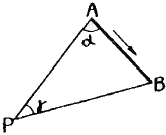
- 58° 00‘ 48“
- 121° 59‘ 12“
- 148° 09‘ 12“
- 238° 00‘ 48“
(정답률: 62%)
64. 어느 지점의 각을 8회 측정하여 평균제곱근 오차 ±0.7“를 얻었다. 같은 조건으로 관측하여 ±0.3”의 평균제곱근 오차를 얻기 위하여는 몇 회 측정하는 것이 바람직한가?
- 18회
- 24회
- 32회
- 44회
(정답률: 65%)
65. 점 A의 표고 120m, 점 B의 표고 225m, AB의 수평거리 260m일 때 표고 200m의 등고선은 AB의 연결선상에서 A점으로부터 수평거리 몇 m 떨어진 곳을 지나는가?
- 190m
- 195m
- 200m
- 2⑤m
(정답률: 47%)
66. A, B 2점간의 고저차를 구하고자 그림과 같이 ①, ①, ② 노선을 직접 수준측량하여 다음과 같은 결과를 얻었다. B점의 표고의 최확값은?
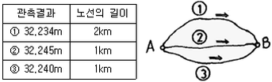
- 32.249m
- 32.241m
- 32.243m
- 32.245m
(정답률: 31%)
67. 수준측량에 있어서 측량목적에 따른 분류에 속하지 않는 것은 무엇인가?
- 표면 수준 측량
- 단면 수준 측량
- 고저차 수준 측량
- 직접 수준 측량
(정답률: 36%)
68. 국가기본도인 축적 1/5,000의 수치지도에서 산기슭으로부터 정상까지 직선 거리를 재어보니 24cm이며, 산기슭의 표고는 175m, 산 정상의 표고는 480m이었다. 이 사면의 경사는 얼마인가?
- 약 1/3.9
- 약 1/5.8
- 약 1/7.4
- 약 1/9.3
(정답률: 20%)
69. 지도중첩을 설명한 것으로 가장 올바른 것은?
- 둘 이상의 압력지도나 자료층을 겹치는 것
- 도면을 인접한 다른 도면과 연결시키는 것
- 하나의 자료층에 다른 자료층을 복사하는 것
- 입력지도를 다른 도면으로 대체하는 것
(정답률: 69%)
70. 삼각수준측량의 관측값에서 대기의 굴절오차(기차)와 지구의 곡률오차(구차)의 조정방법 중 옳은 것은?
- 기차는 높게, 구차는 낮게 조정한다.
- 기차는 낮게, 구차는 높게 조정한다.
- 기차와 구차를 함께 높게 조정한다.
- 기차와 구차를 함께 낮게 조정한다.
(정답률: 59%)
71. 평지에서 8km 떨어진 두 삼각점 사이를 관측하기 위하여 세워야 되는 측표의 최소높이는? (단, 지구의 반경 = 6.370km)
- 2.1m
- 5.1m
- 7.1m
- 9.1m
(정답률: 19%)
72. 기포관의 감도는 무엇으로 표시하는가?
- 기포관의 길이가 곡률 반경에 끼는 각
- 기포관의 눈금의 양간이 곡률 반경에 끼는 각
- 기포관의 1눈금이 곡률 반경에 끼는 각
- 기포관의 두 눈금이 곡률 반경에 끼는 각
(정답률: 60%)
73. 강 주변의 표고를 결정하기 위하여 교호수준측량을 실시하여 다음 결과를 얻었다. A점의 표고가 56.867m 일 때 B점의 표고는? (단, a1=1.465m, a2=0.308m, b1=3.274m, b2=1.047m)
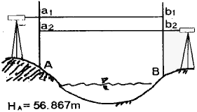
- 55.583m
- 55.593m
- 58.141m
- 58.131m
(정답률: 70%)
74. 다음 오차에 대한 설명 중 틀린 것은?
- 참오차는 관측값과 참값의 차이다.
- 잔차는 최확값과 관측값의 차이다.
- 평균오차는 최확값에 대한 표준편차이다.
- 오차의 일반법칙은 우연오차를 대상으로 한다.
(정답률: 60%)
75. 다음 중 지도의 표현방법에 따른 분류에서 주제도(Thematic Map)가 아닌 것은?
- 지형도
- 지질도
- 토지이용도
- 토양도
(정답률: 54%)
76. 표준줄자와 비교하여 7.5mm가 긴 30m 줄자로 경사면을 잰 결과 150m였다. 경사 보정량이 1cm일 때 양지점의 고저차는?
- 2.01m
- 1.73m
- 1.84m
- 2.65m
(정답률: 14%)
77. 지표면에 존재하는 각각의 주제가 지닌 실제 면적에 비례하여 지도상에 각각의 주제에 관한 면적을 배분하는 투영법은?
- 등적투영법
- 등거리투영법
- 등각투영법
- 원뿔투영법
(정답률: 72%)
78. 동일 조건으로 기선측정을 하여 다음과 같은 결과를 얻었다. 최확치는?
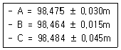
- 98.462m
- 98.464m
- 98.466m
- 98.468m
(정답률: 60%)
79. 평판측량시 축척 1/600일 때 도면작성ㄷ시 도상 0.3mm 오차허용시 중심맞추기 오차의 허용범위는?
- 9cm 이내
- 12cm 이내
- 15cm 이내
- 18cm 이내
(정답률: 65%)
80. 트래버스측량결과에 대한 조정에 있어 위거(또는 경거) 오차량에 대한 조정방법 중 컴퍼스법칙에 의한 조정방법으로 맞는 것은?
- 각과 거리의 측정의 정밀도가 다르게 측정되었을 시에 적용하는 방법이다.
- 위거와 경거의 폐합(결합)오차를 각 측선의 거리에 비례하여 그 조정량을 구한다.
- 위거와 경거의 폐합(결합)오차를 각 측선에 이르는 누적된 거리에 따라 그 조정량을 구한다.
- 위거와 경거의 폐합(결합)오차를 각 측선에 이르는 위거(또는 경거)의 크기에 비례하여 그 조정량을 구한다.
(정답률: 36%)
5과목: 측량학
81. 측량심의회의 위원장은 누가 지명하는가?
- 건설교통부장관
- 건성교통부차관
- 국토지리정보원장
- 행정자치부장관
(정답률: 40%)
82. 다음 중 수수료 징수사항이 아닌 것은?
- 지도등의 심사 신청
- 측량업의 등록증 및 등록수첩의 재교부 신청
- 측량성과 또는 측량기록의 열람
- 측량성과의 국외반출 허가신청
(정답률: 63%)
83. 부정한 방법으로 측량업의 등록은 한 자의 벌칙은?
- 2년 이하의 징역 또는 2000만원 이하의 벌금에 처한다.
- 1년 이하의 징역 또는 1000만원 이하의 벌금에 처한다.
- 200만원 이하의 벌금에 처한다.
- 200만원 이하의 과태료에 처한다.
(정답률: 31%)
84. 지도 도식의 기로 및 선의 종류에 대한 설명 중 옳지 않은 것은?
- 선은 실선과 파선으로 구분한다.
- 지물의 실제현상 또는 상징물의 표현은 선 또는 기호로 한다.
- 기호 및 선의 굵기는 국토지리정보원장이 정한다.
- 선의 구분은 굵기로서 나타내는 것을 원칙으로 하며 10가지 종류로서 구분한다.
(정답률: 58%)
85. 다음 중 기본측량의 실시를 공고하여야 하는 사람은?
- 군수
- 건설교통부장관
- 국토지리정보원장
- 시ㆍ도지사
(정답률: 19%)
86. 다음 중 일반측량업의 업무내용에 포함되지 않는 내용은?
- 일반측량으로서 토지에 대한 측량
- 지하시설물에 대한 측량
- 설계금액이 3천만원이하인 공공측량
- 설계에 수반되는 조사측량과 측량관련 도면의 작성
(정답률: 58%)
87. 측량업의 등록을 취소하거나 1년 이내의 기간을 정하여 측량업을 정지시킬 수 있는 요건에 관한 설명 중 옳지 않은 것은?
- 계속하여 6개월 이상 측량업의 실적이 없을 때
- 측량업 등록기준에 미달하게 된 때
- 과실로 인하여 측량을 부정확하게 한 때
- 고의로 인하여 측량을 부정확하게 한 때
(정답률: 57%)
88. 측량법에서 정의된 용어에 대한 설명 중 그 내용이 옳지 않은 것은?
- 측량계획기관이라 함은 일반측량에 관한 종합적인 계획을 수립하는 자를 말한다.
- 측량작업기관은 측량계획기관의 지시 또는 위임에 의하여 측량에 관한 작업을 실시하는 자를 말한다.
- 측량계획기관이 그 계획한 측량을 직접 실시하는 경우에도 측량작업기관으로 볼 수 있다.
- 측량성과라 함은 당해 측량에서 얻은 최종결과를 말한다.
(정답률: 58%)
89. 측량법에 따른 중급기술자에 해당되지 않는 기술자는?
- 측량및지형공간정보기사의 자격을 가진 자로서 4년이상 측량업무를 수행한 기술자격자
- 측량및지형공간정보산업기사의 자격을 가진 자로서 7년이상 측량업무를 수행한 기술자격자
- 석사학위를 가진 자로서 2년이상 측량업무를 수행한 학력ㆍ경력자
- 석사학위를 가진 자로서 6년이상 측량업무를 수행한 학력ㆍ경력자
(정답률: 43%)
90. 다음 설명 중 옳지 않은 것은?
- 기본측량의 측량성과를 사용하여 지도를 간행하고 판매하고자 하는 자는 지도를 간행한 후 국토지리정보원장의 심사를 받아야 한다.
- 기본측량의 측량성과는 국토지리정보원장이 고시한다.
- 기본측량성과와 측량기록의 사본의 교부는 국토지리정보원장에게 신청하여야 한다.
- 시장, 군수 또는 구청장은 그 관할구역안에 있는 측량표를 감시하여야 한다.
(정답률: 15%)
91. 측량기기의 성능검사대행자로 등록된 자가 등록사항 중 변경이 있는 경우 변경등록 또는 변경신고를 하여야 한다. 이 때 변경등록사항이 아닌 것은?
- 검사시설 또는 검사장비의 변경
- 기술능력의 변경
- 상호의 변경
- 법인 임원의 변경
(정답률: 57%)
92. 측량협회에 대한 설명으로 잘못된 것은?
- 협회는 법인으로 한다.
- 측량업자 및 측량기술자는 그들의 품위보전등을 위하여 측량협회를 설립할 수 있다.
- 업무구역을 전국으로 하되, 전체 시ㆍ군ㆍ구의 3분의 2이상에 사무소를 두고 있어야 한다.
- 협회는 그 주된 사무소의 소재지에서 설립등기를 함으로써 성립한다.
(정답률: 62%)
93. 건설교통부 장관은 일반측량의 성과가 어떤 목적을 위하여 필요하다고 인정되는 경우에는 일반측량의 실시자에게 측량성과 및 측량기록 사본의 제출을 요구할 수 있는데 이 때 그 목적과 관계없는 것은?
- 측량에 관한 자료의 수집 및 분석
- 측량의 정확성 확보
- 측량기기의 개발
- 측량의 중복 배제
(정답률: 67%)
94. 시장, 군수 또는 구청장은 건설교통부령이 정하는 바에 의하여 매년 몇회이상 관할 구역안에 있는 영구표지 또는 일시표지의 현황을 조사하는가?
- 1회
- 2회
- 3회
- 4회
(정답률: 57%)
95. 수치주제도의 보완은 몇 년 주기로 하는가?
- 1년 마다 1회이상
- 2년 마다 1회이상
- 3년 마다 1회이상
- 4년 마다 1회이상
(정답률: 58%)
96. 다음 중 측량표의 종류에 속하지 않는 것은?
- 영구표지
- 정기표지
- 임시설치표지
- 일시표지
(정답률: 47%)
97. 공공측량으로 지정할 수 있는 일반측량이 아닌 것은?
- 측량 노선길이가 5km 이상인 수준측량
- 촬영지역의 면적이 1km2 이상인 측량용 사진의 촬영
- 측량실시 지역의 면적이 1km2 이상인 삼각측량
- 국토지리정보원이 발행하는 지도의 축척과 동일한 축척의 지도제작
(정답률: 43%)
98. 1등삼각점 표석의 표주 상면 및 반석의 한변의 길이는 얼마인가?
- 표주 : 15cm, 반석 : 30cm
- 표주 : 20cm, 반석 : 30cm
- 표주 : 30cm, 반석 : 15cm
- 표주 : 30cm, 반석 : 30cm
(정답률: 67%)
99. 다음 중 측량법에 규정된 측량업의 종류가 아닌 것은?
- 측지측량업
- 공간영상도화업
- 항공촬영업
- 삼각측량업
(정답률: 25%)
100. 지도도식규칙에 따른 지도의 외도곽에 표시되는 것으로 틀린 것은?
- 인쇄연도 및 축척
- 행정구역경계
- 도엽명 및 도엽번호
- 편집연도
(정답률: 58%)